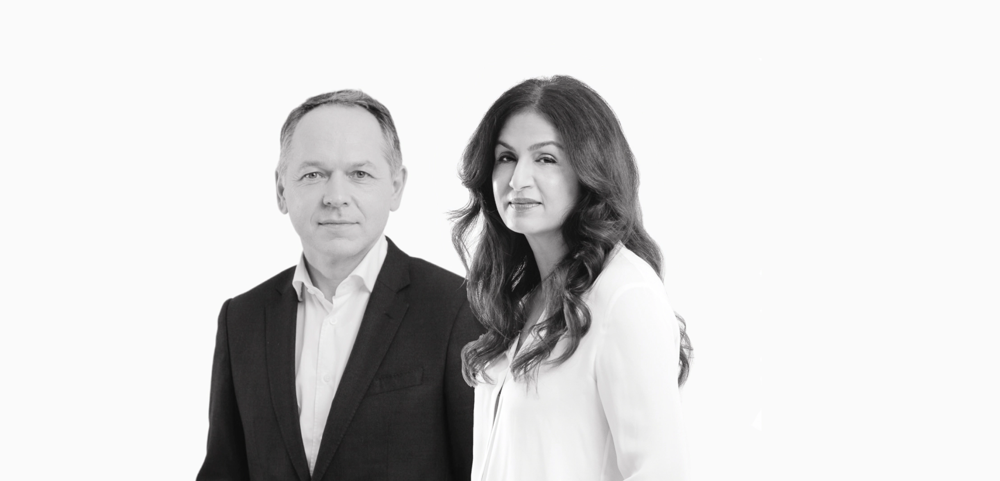

Building Trust orson.
The CEO Advisory Firm
Deeply Human
Augmented with AI
Fix what keeps CEOs awake at night
Growth Acceleration
Sustainable growth is at the heart of any economic project whether the challenge is market entry, a new service launch or a successful acquisition.
Crisis Management
The more prepared and trained a company is the better its ability to react quickly to a crisis. And when time is of the essence, the only solution is to rely on experience.
Reputation building
Developing and rolling out a holistic communication strategy that aligns all stakeholders is one of the key success factors for companies and their executives.
Change & Transformation
Successful transformation means onboarding all stakeholders to prevent deadlocks. Time and energy spent on change management will generate savings in implementation.